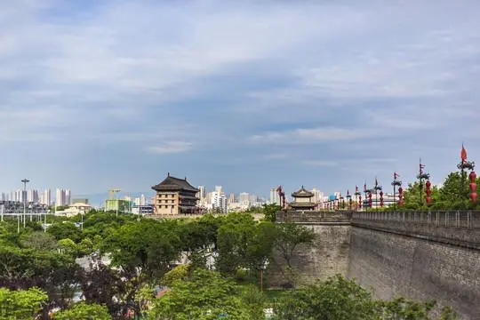
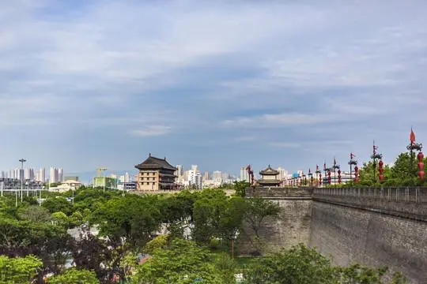

Shanghai
In eastern China, Shanghai stands as a dynamic metropolis, blending modernity with cultural heritage, often called the "Pearl of the Orient." Split by the Huangpu River, this city harmonizes tradition with a modern skyline of towering structures like the Oriental Pearl Tower. The Bund's historic waterfront contrasts with contemporary skyscrapers, offering a glimpse into Shanghai's past. Yu Garden and Jing'an Temple provide serene respites amidst the urban sprawl, showcasing traditional Chinese craftsmanship. Nanjing Road bustles with vibrant markets and trendy shops, while Shanghai's diverse cuisine, from street vendors to upscale dining, invites exploration into its flavorful offerings. Shanghai's essence lies in its fusion of ancient traditions and cosmopolitan flair, welcoming visitors to experience its unique blend of old and new.
Shanghai
Chongqing
Nestled in southwest China, Chongqing is a city of contrasts, where modernity meets ancient heritage in the
heart of mountainous landscapes. Known as the "Mountain City," Chongqing's skyline is a blend of towering
skyscrapers and steep hillsides.
The city's defining feature is its riverside location along the Yangtze and Jialing Rivers. These waterways
offer stunning views and serve as a lifeline for transportation, with bustling docks and riverside
promenades.
Chongqing's charm lies in its historic quarters, like Ciqikou Ancient Town, where traditional teahouses
and narrow alleys preserve the city's rich cultural heritage. The city's culinary scene is renowned for
its spicy Sichuan cuisine, celebrated in local markets and restaurants.
Modern Chongqing, with its futuristic buildings and thriving commercial districts, contrasts sharply with
the ancient temples and historic sites scattered across the city. Exploring Chongqing reveals a captivating
blend of past and present, set against a backdrop of scenic mountains and rivers, offering a unique
experience at every turn.
Chongqing
Beijing
In northern China, Beijing, the ancient capital, embodies a rich historical legacy harmoniously intertwined
with modernity. Iconic landmarks like the Great Wall, a symbol of China's resilience, and the Forbidden
City, a magnificent imperial palace, exemplify the city's heritage.
Tiananmen Square, a historic and symbolic public space, contrasts with the serene beauty of the Temple
of Heaven, offering a glimpse into China's cultural depth. Beijing's traditional hutongs and contemporary
art districts like 798 Art Zone paint a diverse cultural canvas.
The city's culinary scene, from street food to Peking duck, delights the palate with its variety and
flavors. Beijing seamlessly melds its imperial past with a thriving present, inviting visitors to explore
its historical treasures and vibrant energy.
Beijing

Xi'an
In central China, Xi'an, an ancient city brimming with history, stands as a testament to China's cultural
richness. Renowned as the starting point of the Silk Road, Xi'an holds treasures from bygone eras.
The city's iconic symbol, the Terracotta Army, unveils the legacy of China's first emperor, Qin Shi Huang.
This archaeological wonder, with thousands of life-sized clay soldiers, offers a glimpse into ancient
craftsmanship and military prowess.
The ancient city walls, dating back centuries, encircle the city, contrasting with modern developments.
Xi'an's Muslim Quarter, a bustling hub of flavors and vibrant markets, showcases the city's diverse
culinary heritage.
Beyond its historical marvels, Xi'an boasts pagodas, temples, and the Big Wild Goose Pagoda, revered for
its cultural significance. The city's blend of ancient relics and modern life encapsulates China's rich
heritage and contemporary vibrancy.
Xi'an
 

Xiamen
In southeastern China, Xiamen, a coastal city, blends natural beauty with modernity, offering a
unique charm along the shores of the Taiwan Strait. Known for its subtropical climate and
picturesque coastal scenery, Xiamen is often hailed as the "Garden on the Sea."
The city's striking coastline features scenic spots like Gulangyu Island, a UNESCO World Heritage
Site famous for its colonial architecture and peaceful ambiance. The island's car-free streets and
vibrant cultural scene attract visitors seeking tranquility and artistic inspiration.
Xiamen's vibrant culinary scene showcases a fusion of flavors, especially its seafood delicacies and
local snacks found in bustling night markets. The city's modern skyline contrasts with its historical
sites, such as Nanputuo Temple, where ancient Buddhist architecture stands in harmony with the urban
landscape.
The city's dedication to green spaces and coastal preservation is evident in its lush parks, like
Xiamen Botanical Garden, offering serene retreats amidst the bustling cityscape. Xiamen's blend of
natural splendor, cultural heritage, and modern developments creates a captivating tapestry for visitors
to explore.
Xiamen